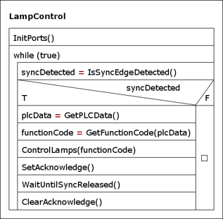
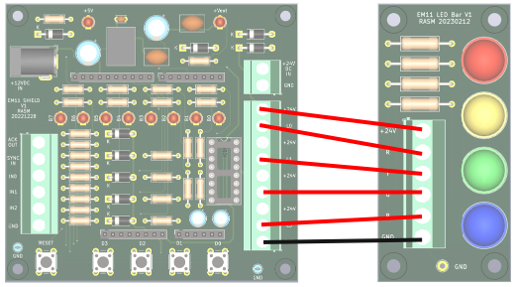
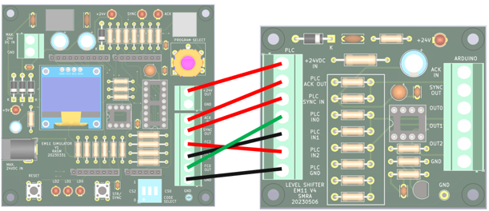
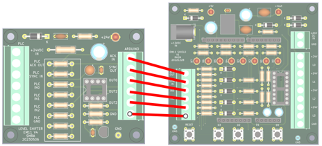

Opdracht 6: Testen en simuleren van de signaallamp-besturing
In dit practicum test je het programma voor de signaallamp-besturing. Het PSD van het volledige programma staat in figuur 1.

Figuur 1. PSD van het volledige besturingsprogramma
Tip
Voor deze opdracht hoef je geen code te schrijven, maar alleen de code van de voorgaande opdrachten te testen en te simuleren. Voor de zekerheid bieden we je de uitweringen daarvan aan, zodat je deze kunt gebruiken als referentie. Open daartoe in Visual Studio Code het project
Framework_6door de mapopdracht6/Framework_6te openen.Het is niet verplicht om PSD’s te maken, maar dit mag wel ter verduidelijking.
Integratie- en simulatietesten van de geimplementeerde functies
Alle code moet eerst worden getest voordat de Arduino met shield wordt aangesloten op de level shifter en de PLC van de transportband. Het testen is gefaseerd:
Testen en simuleren met alleen Arduino + shield.
Testen met Arduino + shield + PLC-simulator.
Testen met Arduino + shield + PLC (onderdeel van de SAT: Site Acceptance Test).
In dit practicum voer je simulatie 1 uit: testen met de knoppen op het shield.
Opdracht 6.1 Test 1: Arduino + shield
In deze test simuleer je het SYNC-signaal en de functiecode met de drukknoppen, en controleer je het gedrag via de LED’s op het shield.
Deze simulatie wijkt af van test 2 en 3, omdat de knoppen op het shield geinverteerd werken: ingedrukt geeft logische 1, niet-ingedrukt geeft logische 0.
Pas voor deze simulatie alleen de benodigde code minimaal aan, in de functie IsSyncBitSet().
N.B.: voor test 2 en 3 moet je weer de gewone (niet-aangepaste) versie van IsSyncBitSet() gebruiken.
De simulatie verloopt als volgt:
Simuleer een functiecode tussen
0en7door 0 of meer knoppen D2..D0 in te drukken. Houd deze knoppen ingedrukt.Druk vervolgens op knop D3 om een opgaande flank van het SYNC-signaal te simuleren.
Bij correcte simulatie gaan LED’s B3..B0 aan, evenals de SYNC-LED (B6).
Bij correcte simulatie gaat ook LED B7 aan (meest rechter LED), omdat die op het shield direct gekoppeld is aan ACK.
Laat de knoppen D2..D0 los.
Laat knop D3 los (simulatie van inactief worden van SYNC).
Bij correcte simulatie gaan zowel de SYNC-LED (B6) als de ACK-LED (B7) uit.
Opdracht 6.2 Test 2: Arduino + shield + signaalzuil-simulator
Wanneer test 1 succesvol is uitgevoerd, sluit je de LED-bar met kleuren-LED’s aan als simulatie van de signaalzuil. Controleer op dezelfde manier als in test 1 of de juiste kleuren worden aangestuurd.
Sluit Arduino-shield en LED-bar aan volgens tabel 1 en figuur 2.
Arduino shield |
LED-bar |
|---|---|
+24V |
+24V |
L0 |
R (red) |
L1 |
Y (yellow) |
L2 |
G (green) |
L3 |
N (blue) |
Tabel 1. Aansluitingen Arduino-shield en LED-bar

Figuur 2. Aansluitingen Arduino-shield en LED-bar
Opdracht 6.3 Test 3: Arduino + shield + level shifter + PLC-simulator
Wanneer test 2 succesvol is afgerond, vervang je de knopbesturing van de handshakesignalen door besturing via PLC-inputs. Daarvoor gebruik je een PLC-simulator via de level shifter.
N.B.: de level shifter moet voorzien zijn van de juiste weerstanden (zoals berekend bij het practicum Netwerken) en de spanningen moeten daar zijn gecontroleerd.
Sluit de PLC-simulator en de level shifter aan volgens tabel 2 en figuur 3.
PLC-simulator |
Level shifter |
|---|---|
+24V OUT |
+24VDC IN |
ACK IN |
PLC ACK OUT |
SYNC OUT |
PLC SYNC IN |
FC2 OUT |
PLC IN 2 |
FC1 OUT |
PLC IN 1 |
FC0 OUT |
PLC IN 0 |
Tabel 2. Aansluitingen PLC-simulator en level shifter

Figuur 3. Aansluitingen PLC-simulator en level shifter
Sluit vervolgens de level shifter en het Arduino-shield aan volgens tabel 3 en figuur 4.
Level shifter |
Arduino shield |
|---|---|
ACK IN |
ACK OUT |
SYNC OUT |
SYNC IN |
OUT0 |
IN0 |
OUT1 |
IN1 |
OUT2 |
IN2 |
GND |
GND |
Tabel 3. Aansluitingen level shifter en Arduino-shield

Figuur 4. Aansluitingen level shifter en Arduino-shield
Op de PLC-simulator zijn standaardprogramma’s beschikbaar voor de signaalzuil (tabel 4).
Simulatieprogramma |
Functie |
|---|---|
0 |
PLC-simulator staat uit en genereert geen handshake-signalen |
1 |
Stuur permanent function code 0 uit (groen) |
2 |
Stuur permanent function code 1 uit (geel) |
3 |
Stuur permanent function code 2 uit (rood) |
4 |
Stuur permanent function code 3 uit (groen + geel) |
5 |
Stuur permanent function code 4 uit (rood + geel) |
6 |
Stuur permanent function code 5 uit (blauw) |
7 |
Stuur permanent function code 6 uit (blauw) |
8 |
Stuur permanent function code 7 uit (blauw) |
9 |
Stuur achtereenvolgens function codes 0 t/m 7 uit met tussenpauzes van een halve seconde |
Tabel 4. PLC-simulatieprogramma’s
Met de draaiknop PROGRAM SELECT kies je het gewenste simulatieprogramma. Op het OLED-scherm zie je deze keuze en de functiecode.
Bij simulatieprogramma’s 1 t/m 9 moet altijd een volledige handshake met SYNC en ACK worden uitgevoerd. Controleer status en foutmeldingen via de SYNC-LED, ACK-LED en het OLED-scherm.
Controleer of alle simulatieprogramma’s uit tabel 4 correct werken. Zo niet:
Controleer eerst bedrading en aansluitingen.
Zoek daarna de fout in de Arduino-code en pas de code aan.
Opdracht 6.3 Test 4: Arduino + shield + LED-bar + level shifter + besturings-PLC
Wanneer test 3 succesvol is afgerond, voer je de integratietest uit met de PLC van de transportband, de level shifter en de Arduino.
Sluit hiervoor de level shifter aan op de PLC in plaats van op de PLC-simulator. Voer daarna het aangeleverde PLC-testprogramma uit zodat de juiste signalen worden gegenereerd.
Opdracht 6.4 Test 5: Arduino + shield + signaalzuil + level shifter + besturings-PLC
Wanneer test 4 succesvol is afgerond, vervang je de LED-bar door de signaalzuil. Controleer of de juiste kleuren op de lampen worden weergegeven.
Opdracht 6.5: Inleveren van de opdrachten
Lever je rapportage in op Brightspace. Gebruik hiervoor het document Rapportage_Opdracht_6.docx in de map opdracht6 van de microcontrollers workshop. In dit document vul je de antwoorden op de vragen en de conclusies van de verschillende opdrachten in.